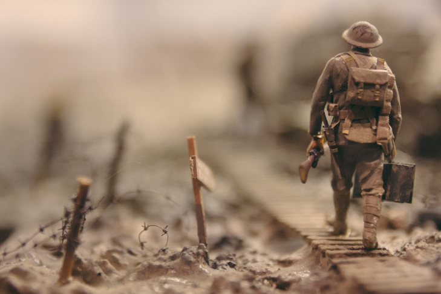

Guerras mundiais
Um fórum dedicado a mostrar um dos períodos mais turbulentos da humanidade
Um fórum dedicado a mostrar um dos períodos mais turbulentos da humanidade
1ª Guerra Mundial
A Primeira Guerra Mundial foi um marco na história da humanidade. Esta é a primeira guerra do século 20 e o primeiro conflito em estado de guerra total - um país mobiliza todos os seus recursos para lutar. Durou de 1914 a 1918, e foi o resultado da transformação na Europa que gerou conflitos em diversos países. O resultado da Primeira Guerra Mundial foi um trauma severo. Uma geração de jovens cresceu nos horrores da guerra. A frente, especialmente a oeste, foi marcada por massacres e 10 milhões de mortos nas trincheiras. O infortúnio da Primeira Guerra Mundial levou a uma nova guerra em 1939.
2ª Guerra Mundial
A Segunda Guerra Mundial foi um conflito militar global que durou de 1939 a 1945, envolvendo a maioria dos países do mundo - incluindo todas as grandes potências - organizados em duas alianças militares opostas: as Potências Aliadas e as Potências do Eixo. Esta é a guerra mais abrangente da história, com mais de 100 milhões de soldados destacados. No estado de “guerra total”, os principais atores envolvidos colocam todas as suas capacidades econômicas, industriais e científicas a serviço da guerra, independentemente da distinção entre recursos civis e militares. Marcado por um grande número de ataques a civis, incluindo o Holocausto, e o único uso de armas nucleares em combate, este é o conflito mais mortal da história da humanidade, matando de 50 a 70 milhões de pessoas.